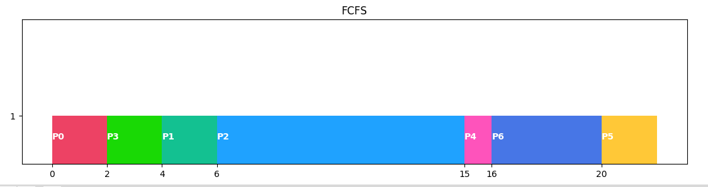
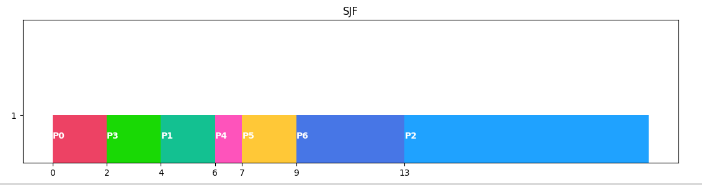
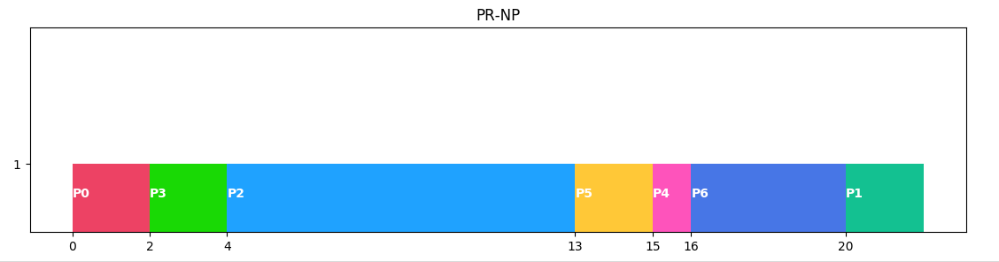
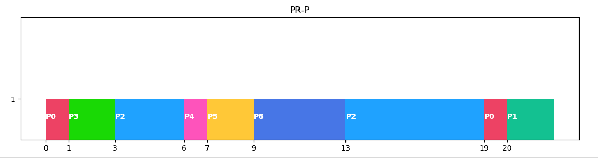
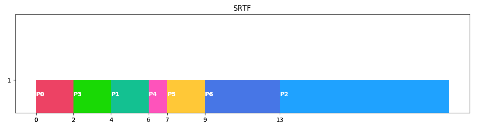
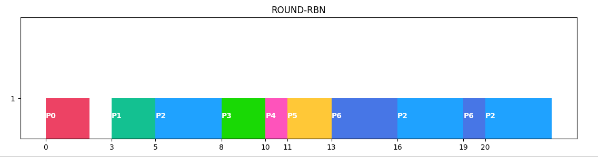
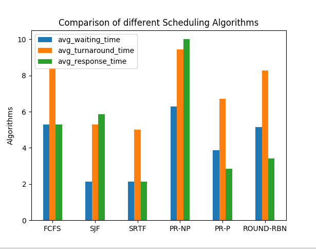

Indices and tables¶
Demo¶
      Process¶
-
class
src.utils.process.Process(p_id, arrival_time, burst_time, priority=1)[source]¶ - Args:
p_id (int) : process ID
arrival_time (int) : process Arriva time in ready queue
burst_time (int) : Burst Time
priority (int) : priority of the process , default: 1
- Defaults:
self.waiting_time = 0
self.return_time = 0
self.turnaround_time = 0
self.response_time = 0
self.completed = False
_
Scheduling Algorithms¶
- All the algorithms expects:
- Args:
processes (
src.utils.process.Process): An array of process to be scheduled.- Returns:
Dictionary. the result of the scheduling:
{ 'name': 'Algo Name', 'avg_waiting_time': total_waiting_time/len(proc), 'avg_response_time': total_response_time/len(proc), 'avg_turnaround_time': total_turnaround_time/len(proc), 'processes': proc, # modified scheduled processes 'gantt': gantt # gantt chart array }
_
Tables¶
-
src.utils.table.plot(processes)[source]¶ Displays the given processes in a tabular format
- Args:
processes (Array :
src.utils.process.Process): processed processes.
_
Graphs¶
Visual representation of Scheduling Algorithms